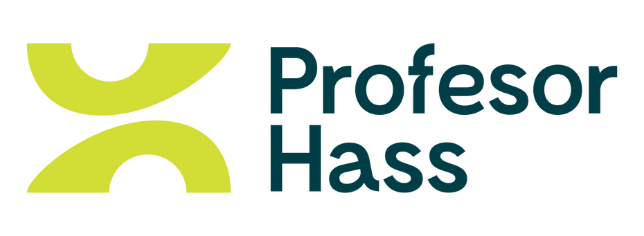

Por medio de la presente, queremos expresar nuestra satisfacción y respaldo a
INGECENTRIFUGAS S.A.S., empresa con la cual hemos mantenido una relación
comercial durante los últimos dos años. Durante este tiempo, INGECENTRIFUGAS S.A.S. ha
demostrado un alto nivel de compromiso, responsabilidad y profesionalismo en cada uno de
los trabajos realizados para nuestra empresa. Su equipo de trabajo se ha caracterizado por
su excelente disposición y calidad humana, garantizando soluciones eficientes y óptimas para
nuestras necesidades. Gracias a su experiencia y conocimientos técnicos, han contribuido
significativamente al desarrollo y mantenimiento de nuestros procesos, convirtiéndose en un
aliado estratégico en nuestra operación. Por lo anterior, recomendamos a INGECENTRIFUGAS
S.A.S. como una empresa confiable y altamente competente en su sector.
Atentamente,
- Juan Esteban Echavarría Álvarez
AGROEXPORT HASS S.A.S.